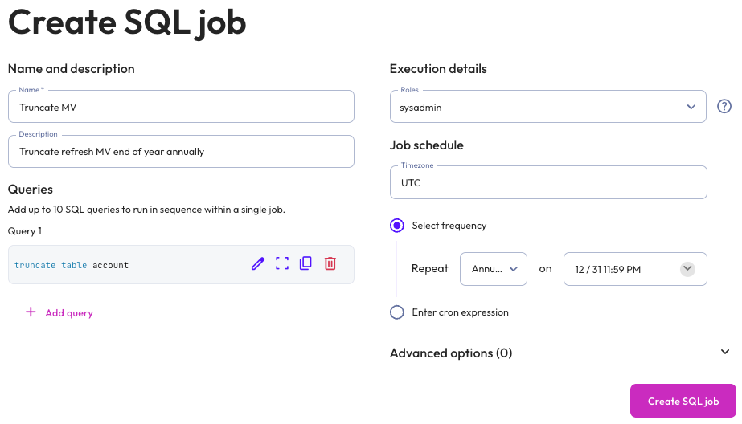

SQL jobs#
Note
Multi-statement SQL jobs is available as a public preview in Starburst Enterprise. Contact Starburst Support with questions or feedback.
SQL job scheduling is best suited for executing SQL statements, such as
CREATE, DROP, REFRESH, MERGE and TRUNCATE. Statements that return
results are not supported, such as statements that begin with SELECT;
however, using SELECT as part of a statement is supported.
A SQL job can include up to 10 queries, each of which can contain a single statement. The queries run sequentially. If a single query in a job fails, SEP re-tries the query once. If it fails again, SEP fails the job and sends a notification. From the Job details pane, you can try to re-run a failed job; it will also run again according to its schedule.
From the SEP navigation menu, click Jobs. The SQL tab is where you create, view, search for, and manage SQL jobs.
The SQL jobs list is organized in the following columns:
Name: The name of the SQL job. Click the column heading to sort in ascending or descending alphabetical order.
Description: The description provided for the SQL job.
# of statements: The number of SQL statements that the job contains.
Last run status: When the SQL job was last run.
Executing role: The role running the SQL job.
Last run ended: The date and time the last SQL job run ended.
Next run starts: The next date and time the SQL job is scheduled to start running. If the schedule is paused, the status of the schedule also appears here.
Create a SQL job#
To create and run a SQL job on a schedule, click Create SQL job, then provide the following information in the Create SQL Job dialog:
In the Name and description section, enter a name for the job and a useful description.
In the Query section, click + Add query and enter the single statement that you want to run in the Write SQL statement dialog that appears.
Click Validate SQL to validate the statement, then click Save.
If you want your job to contain multiple queries, click + Add query again and repeat the validation process for each statement.
In the Execution details section:
Expand the Roles menu and select the role that SEP will use to execute the statement.
In the Job schedule section:
Choose the time zone of your operating system from the Timezone menu.
Choose the Select frequency or Enter cron expression recurring interval format.
For Select frequency: Choose an hourly, daily, weekly, monthly, or annual schedule from the menu. The corresponding values depend on the schedule selected:
Hourly: Enter a value between 1 minute and 59 minutes.
Daily: Enter a time in the format
hh:mm, then specify AM or PM.Weekly: Enter a time in the format
hh:mm, specify AM or PM, then select a day of the week.Monthly: Enter a time in the format
hh:mm, specify AM or PM, then select a date.Annually: Enter a month, day, hour, and minutes in the format
MM/DD hh:mm. Specify AM or PM.
For Enter cron expression: Enter the desired schedule in the form of a cron expression. For example, a SQL job run weekly at 9:30 AM on Monday, Wednesday, and Friday:
30 9 * * 1,3,5
Optionally, expand the Advanced options section, where you can set the following properties:
Default catalog: From the menu, select the catalog that you want to serve as the context for the query or queries in the job. This is analogous to using the catalog selector in the query editor or the
SQL USEcommand.Default schema: From the menu, select the schema that you want to serve as the context for the query or queries in the job. This is analogous to using the schema selector in the query editor or the
SQL USEcommand.Session properties: Provide the key and value of a session property that you want to apply to the entire SQL job.
Click Save.

Note
SQL jobs execute as an internal system user (SEP-SYSTEM-USER) rather than the
interactive user. When a job contains a CREATE VIEW statement without an
explicit security mode, the view is created with SECURITY DEFINER and the
definer is SEP-SYSTEM-USER. Because this user only has the public role,
access checks on tables referenced by the view are evaluated against its limited
permissions rather than those of the calling user. As a result, views created
this way may be unreadable or behave differently from the same view created
interactively.
To have permissions evaluated for the caller instead, explicitly specify
SECURITY INVOKER in your CREATE VIEW statement.
View SQL job details#
To view the details of a SQL job, click the name of the job. The header of the job details pane displays the following information about your SQL job:
Description: The description provided for the SQL job.
Next run: The next date and time the SQL job is scheduled to run. If the schedule is paused, the status of the schedule also appears here.
Executing role: The role running the SQL job.
Run now allows you to run the SQL job instantly.
Completed queries and queries in progress appear in the Job history section, which displays the following information:
Query ID: A unique identifier for each query. Click the Query ID to view statement details.
Note
If you can see a job in the Job history list but not the query execution details, your active role does not have the privileges required to browse query history.
Status: check_circle for successfully completed statements and error for failed statements.
Query order: The order in which individual statements within a job were executed.
Started: Date and time the statement started running.
Elapsed time: Total duration for processing the statement.
Query progress: How much of the process is completed; shown as a percentage.
Manage SQL jobs#
You can manage SQL jobs in the SQL jobs pane and job details pane. Click themore_vertoptions menu to edit, delete, pause, or resume the selected SQL job.
Any user can view and manage any job that is created with an executing role that can be assumed by that user. The executing role does not have to be actively enabled, only assigned to the user.